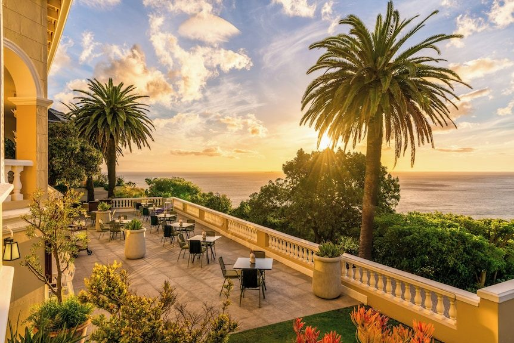

A 13-room Relais & Châteaux house above the Atlantic with a private art collection and wine gallery — the gateway stay before or after safari, and reason enough to linger.
Ellerman House is what happens when a grand Edwardian mansion on Bantry Bay stays in caring hands: thirteen rooms, a cliff-side lawn over the Atlantic, and the feeling of staying in the home of a spectacularly good host.
The house holds one of the finest private collections of South African art anywhere — over a thousand works through the rooms and gardens — and a wine gallery whose cellar runs thousands of bottles deep in Cape benchmarks. Breakfast is cooked to order, the pantry is open all day, and almost everything is included in the rate.
I use it as the Cape Town bookend for safari itineraries — a few days here before the bush resets the jet lag in style — but clients routinely tell me it was the stay they'd repeat first.

The art collection. A museum-grade survey of South African art you live inside, not visit.
The wine gallery. A working cellar of the Cape's best — tastings in-house, and winelands day trips arranged from the door.
Thirteen rooms only. The scale makes it a house party, not a hotel — staff outnumber guests and it feels like it.
Book it like a safari camp. Thirteen rooms means peak season sells out many months out — it goes on the itinerary first, not last.
Bantry Bay is residential. Quiet, spectacular Atlantic views, sunset side of the mountain — a ten-minute drive to the V&A and the city's tables.
Pair it with the bush. It's the natural partner to Royal Malewane or Londolozi — city, winelands, then safari.
The best small hotel in Cape Town and one of the best anywhere — the safari bookend that steals the whole trip.
Rates through me are identical to booking direct — the perks are not. As a Fora advisor, my clients receive a space-available upgrade, daily breakfast, and a hotel credit — plus my direct line to the team on property before and during your stay.
Check Availability